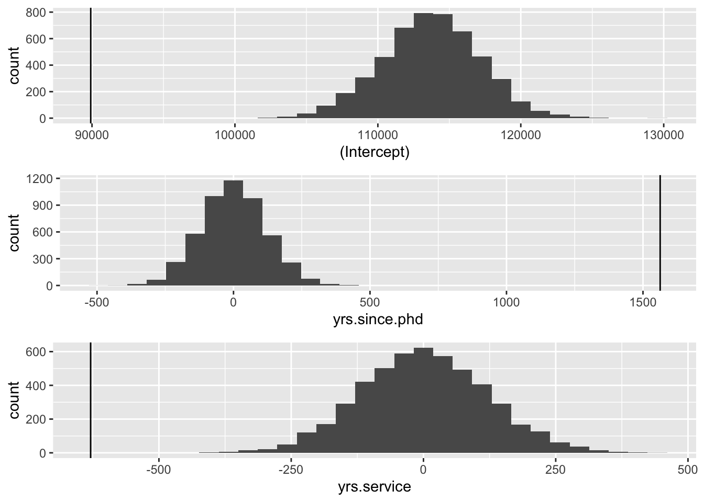

Chapter 3 Permutation
##
## Attaching package: 'gridExtra'## The following object is masked from 'package:dplyr':
##
## combine## [1] "rank" "discipline" "yrs.since.phd" "yrs.service"
## [5] "sex" "salary"#run linear model
model_est <- lm(salary ~ yrs.since.phd + yrs.service, df)
#extract coefficient for independent
est_cof <- summary(model_est)$coefficients[,'Estimate']
est_cof## (Intercept) yrs.since.phd yrs.service
## 89912.1845 1562.8889 -629.1014#number of permutation
n_permutation <- 5000
#empty dataframe to store coefficient
permutation_coef <- tibble(n_iter = NA,
.rows = n_permutation)
#for loop for permutation
for (i in 1:n_permutation) {
#randomly sample without replacement for salary
idx_salary <- sample(1:nrow(df), nrow(df), replace = F)
salary <- df$salary[idx_salary]
#randomly sample without replacement for years since phd
idx_yrs.since.phd <- sample(1:nrow(df), nrow(df), replace = F)
yrs.since.phd <- df$yrs.since.phd[idx_yrs.since.phd]
#randomly sample without replacement for years service
idx_yrs.service <- sample(1:nrow(df), nrow(df), replace = F)
yrs.service <- df$yrs.service[idx_yrs.service]
#run linear model after every iteration
model_permu <- lm(salary~yrs.since.phd+yrs.service)
#extract coefficients
permu_cof <- summary(model_permu)$coefficients[,'Estimate']
permutation_coef[i,1] <- i
#save the coefficients in a dataframe with a for loop
for (j in 1:length(permu_cof)) {
permutation_coef[i,names(permu_cof)[j]] <- permu_cof[j]
}
}
#create an empty dataframe to stroe comparisons between permutation statistic and estimate statistic
N <- tibble(n_iter=NA,.rows = n_permutation)
column_names <- c("intercept","yrs.since.phd","yrs.service")
N[,column_names] <- NA
#run a for loop to do comparison and store the logistic values (two-tailed)
for (i in 1:n_permutation) {
N[i,1] <- i
N[i,2] <- abs(permutation_coef[i,2]) >= abs(est_cof[1])
N[i,3] <- abs(permutation_coef[i,3]) >= abs(est_cof[2])
N[i,4] <- abs(permutation_coef[i,4]) >= abs(est_cof[3])
}
#compute the p_value
p_permu_intercept <- mean(N$intercept)
p_permu_yrs.since.phd <- mean(N$yrs.since.phd)
p_permu_yrs.service <- mean(N$yrs.service)
#plot the figures
g1 <- ggplot(permutation_coef,aes(x=`(Intercept)`))+ geom_histogram()+ geom_vline(xintercept = est_cof[1])
g2 <- ggplot(permutation_coef,aes(x=yrs.since.phd))+ geom_histogram()+ geom_vline(xintercept = est_cof[2])
g3 <- ggplot(permutation_coef,aes(x=yrs.service))+ geom_histogram()+ geom_vline(xintercept = est_cof[3])
grid.arrange(g1,g2,g3)## `stat_bin()` using `bins = 30`. Pick better value with `binwidth`.
## `stat_bin()` using `bins = 30`. Pick better value with `binwidth`.
## `stat_bin()` using `bins = 30`. Pick better value with `binwidth`.